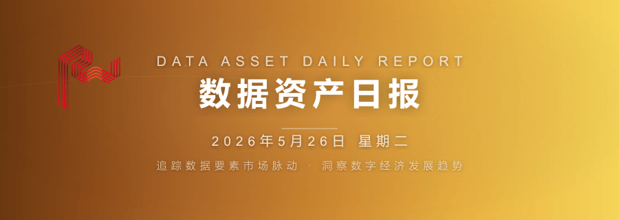

本周（5.18-5.24），数据资产化领域迎来三大里程碑：国家数据局印发《2026年数字经济发展工作要点》，部署8大重点任务明确数据要素市场化路径；全国首单纯数据资产ABS落地青岛，首期5.32亿元、3.72倍超额认购；盐城城投5.1亿数据资产信托融资落地，补齐金融化最后拼图。134家A股公司入表合计38.6亿元，数据资产支持证券储备规模突破2114亿元。
从"能不能入表"到"如何选最优融资方式"，数据资产正从概念走向金融闭环。雾透科技以"数据资源化→数据资产化→数据资本化"三步走方法论，为企业提供从数据盘点到融资变现的全链路赋能。
| 指标 | 截至2026年5月 | 变化趋势 |
|---|---|---|
| A股入表企业 | 134 家 | 较上年+76.4% |
| 入表总金额 | 38.6 亿元 | 头部6家过亿 |
| 数据资产ABS储备 | 2114 亿元（103单） | 年内爆发式增长 |
| 纯数据ABS首单 | 5.32 亿元 | 3.72倍认购 |
| 数据产权登记 | 2302 个 | 周增63个 |
| 城投入表平台 | 50 家 | 合计约3亿元 |